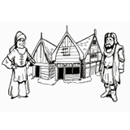

Opdracht middeleeuwse stad
Dit is een groepsopdracht waarin de leerlingen aan de hand van verschillende rollen een middeleeuwse stad bouwen. Deze opdracht is geschikt voor het basisonderwijs en de eerste klas van het voortgezet onderwijs.
Klik hier voor meer informatie